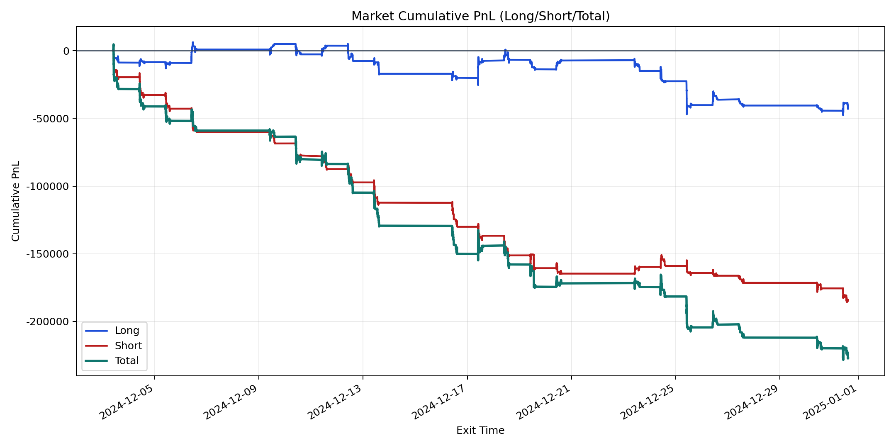
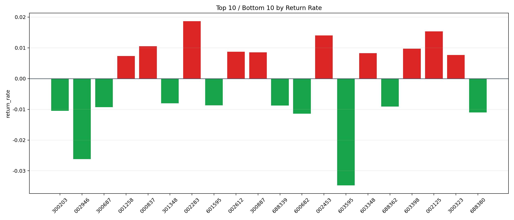

| repo_root | /home/haoranyou/data/output/dynamic_AUM_TAKER_index1000 |
|---|---|
| period_months | 1 |
| period_label | 2024-12-03_to_2024-12-31 |
| start_time | 2024-12-03 09:45:22 |
| end_time | 2024-12-31 14:38:02 |
| n_trades | 17177 |
| n_symbols | 299 |
| total_pnl | -227018.94800000006 |
| long_total_pnl | -42228.283899997274 |
| short_total_pnl | -184790.66410000282 |
| total_entry_notional | 317543283.0 |
| long_entry_notional | 147071529.00000003 |
| short_entry_notional | 170471754.0 |
| total_return_rate | -0.0007149228472264679 |
| long_return_rate | -0.00028712752350590755 |
| short_return_rate | -0.0010839957926402448 |
| top_symbols_by_return | ["002283", "002125", "002453", "000837", "603398", "002612", "300887", "603348", "300323", "001258"] |
| bottom_symbols_by_return | ["603595", "002946", "600682", "688380", "300203", "300687", "688362", "688339", "601595", "301348"] |

